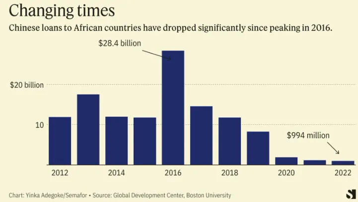

5 Africa
Opalo
A two-decade slump in regional growth rates
Talk of “Africa’s lost decade” is becoming common again, with evidence from stagnant or declining per capita incomes in African states amidst the ongoing global economic slowdown, the region’s fiscal squeeze, and a two-decade slump in regional growth rates (see figure below). Two dozen African countries are currently in or nearing debt distress as of June 2023 — with Chad, Ghana, and Zambia already in default. While many of these countries face a liquidity rather than a solvency crisis, the current high interest rate environment and their inability to access credit markets mean that they lack the means to buy themselves time to grow out of their high debt/GDP ratios.
In 2022 the region spent 31% of total government revenues to service debts.
African states are slated to keep paying relatively higher interest rates for sovereign debt on account of their low credit ratings.
In per capita terms, growth in the region has not increased since 2015. In fact, the region is projected to contract at an annual average rate per capita of 0.1 percent over 2015–25, thus marking a lost decade of growth in the aftermath of the 2014–15 plunge in commodity prices.
Unless African governments reorient their economies towards job-intensive economic growth, as opposed to low-productivity agriculture and job-scarce extractives, it is likely that the downward trend in growth rates will persist for the foreseeable future. Two important factors explain the slowdown in growth rates. First, the region’s economies — including leading giants like Nigeria and South Africa — continue to be heavily reliant on commodity exports with little to no value addition.
Consequently, any weakening of demand or price declines are likely to translate into slower growth. Commodity sectors also typically lack strong direct multiplier effects on the rest of the economy. There are only so many jobs you can get out of an oil rig or copper mine once they are built and running; and agriculture without domestic value addition gets you very little mileage.
African economies have historically struggled to create wage jobs. In the medium term, African economies are projected to generate a mere 3 million formal sector (i.e. wage) jobs against the over 10 million youth who enter the workforce each year. Wage earners account for a mere 16% of the African labor force, with the vast majority of workers confined in low-productivity agriculture or the informal sector. This situation seems to be getting worse. As shown below, labor productivity is declining across Africa.
It is also a gut-punch reminder that the much-needed policy reforms since the 1990s focused almost exclusively on macroeconomic stability from the perspective of monetary and fiscal policy institutions while paying little attention to labor productivity and the need to reduce the rates of informality in African economies. Indeed, a fair amount of development interventions continue to double down on expanding informality as a remedy to policy failures.
One shiuld resist the temptation to see the current economic cycle as a reflection of the disastrous long decade between 1980-1994. Back then, nearly two decades of commodity-fueled growth gave way to dwindling export earnings, closed credit markets, fiscal crises, collapse of government spending on essential public goods and services, and significant erosion of hard-won improvements in human welfare. Many of the policy responses offered back then made things worse. For example, shrinking already small governments weakened African states. Some states — like Liberia, Somalia, and Rwanda — simply collapsed. It took China’s economic rise and the associated commodity boom to knock African states onto a growth path.

Chinese lending to African governments has dwindled to a trickle, relatively speaking. The international commercial debt markets are too expensive for nearly all African states, forcing many to turn to domestic borrowing that is crowding out credit to the private sector and throttling economic growth. Meanwhile, multilateral lenders are stretched and unable to provide the amounts of concessional loans African countries need to weather the current storm without savage cuts on public spending. Add to this mix declining forex earnings from commodity exports and currency depreciations and you have several countries that are struggling to service their foreign public debts.
Most African countries are facing liquidity and not solvency crises — to be blunt, they just did a poor job of managing their debt servicing/maturity timetables and got caught by the timing of multiple global shocks (COVID, anti-inflation rate hikes in major economies, Chinese slowdown, and the war in Europe). Therefore, the immediate solution for countries that are distressed but have not yet defaulted should be to buy them more runway. Second, while there is a need for greater revenue collection and rationalization of expenditures in many African states, such efforts should not make things worse.
Intensified tax administration must be accompanied with policy reforms to improve the business environment, especially for small and medium domestic firms. Similarly, any cutbacks on spending must not erode the hard-won gains made in education attainment, health, and poverty reduction since the 1990s. Despite the concentrated indebtedness in specific countries like Chad, Ghana, Zambia, and others, the regional debt/GDP ratio is a very low 24%.
Nigeria and South Africa — which combined make up 46.3% of the region’s total economic output (and 24% of the population) — will grow (2022-2023) at a meager 3.1% and 0.95%, respectively.
There is a need to focus on jumpstarting growth in Nigeria and South Africa as anchors of regional economic dynamism.
Intra-Africa trade should be a core part of the answer.
African workers are becoming less productive, a situation that requires urgent attention from policymakers.
The ongoing decline in output per worker suggests rather dismal returns to all the investments in human capital, physical capital, and managerial capacity over the last two decades. The apparent stall in productivity gains is likely due to the region’s inability to cultivate sustained job creation in the manufacturing sector. While manufacturing output in Africa is certainly on the rise, the associated expansion in wage employment has been painfully slow.
The political economies of most African states militate against the growth of jobs-heavy domestic manufacturing.
The combination of legitimacy-starved incumbents with a tenuous hold on power and weak state capacity has historically made it difficult for African political elites to (1) protect their own property rights and (2) separate the political and commercial lanes among elites, a move that is critical for crafting successful industrial policies. African elites’ struggle to protect their own property rights, even while in power. With a few exceptions, most elites seldom accumulate easily visible and attributable wealth — for example through the ownership of productive large firms that generate mass employment. The dominant mode of accumulation is to secretly stash wealth abroad or hoard millions of dollars in cash outside of the banking system.
Under the circumstances, the region has historically been hostile to would-be independently successful businesspeople. Such businesspeople tend to be viewed by incumbents as potential political challengers that ought to be cut to size. Notice that the fusion of lanes makes it difficult for elites to specialize in either business or politics, resulting in a region full of mediocre politicians and politically-dependent mediocre businesspeople (this is not to say that there are no genuinely brilliant businesspeople in the region who succeed despite their governments).
To deal with this intra-elite impasse, many countries ended up with systems for accommodating migrant “middleman minorities” and foreign investors in critical sectors like agriculture, mining, finance, and fast-moving consumer goods. However, despite non-trivial investments in manufacturing capacity and decades-long rootedness, such commercial elites often lack the political resources (i.e. electoral and institutional influence) to significantly shift individual countries’ industrial policies in the direction of jobs-focused growth strategies. Indeed, many of these investors wisely cope with tenuous property rights regimes wherever they operate by domiciling their firms (and profits) in foreign jurisdictions with stronger institutions; and mostly focusing on trade facilitation with little domestic value addition.
All this to say that addressing Africa’s productivity slump will require structural reforms to entrench elite property rights in a manner that promotes domestic commercial revolutions in the region. In addition to being in a position to positively influence industrial policy in the direction of mass job creation and anchor foreign direct investments, investors with socio-political skin in the game are also less likely to run away with their capital during economic downturns.
Opalo (2023) There is an urgent need to unlock labor productivity in African economies
5.1 African corridors - Global Gateways
Tooze
Colonialism in Africa worked, until the Berlin Conference of 1884-5, largely through the identification of key corridors for trade whose control guaranteed access to commodities for the controlling power. Now the EU, and above all Germany, seek strategic corridors in Africa for access to key energy transition resources. In English, thanks to Claudia Baranzelli et al:
The paper has two interconnected bodies. The first one deals with mineral resource indicators and their role in drawing 11 EU–Africa Strategic Corridors, in a broader context of Africa–EU partnership. The second strives to understand how such Strategic Corridors are also mineral corridors, i.e. development promotors that use mineral resources as a catalyser to create and strengthen value chains and territorial organisation, boosting economic and societal development at regional scale. The results can help understand how Strategic Corridors can improve access to the present and future mines, mitigating the risk of supply disruptions of critical raw materials for the EU.Tooze (2023) African corridors, Gazan homes, examining incomes, the AI divide & Habermas